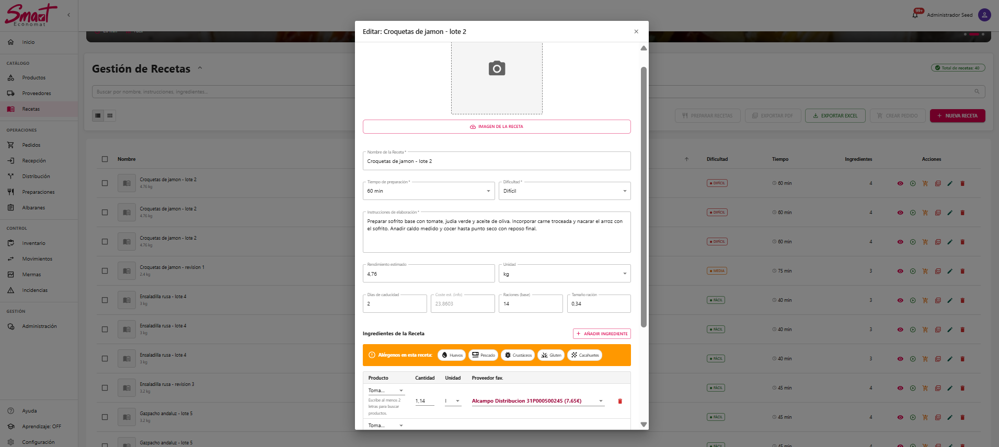

Sistema profesional de gestión de economato con arquitectura full-stack, seguridad empresarial, UX accesible, despliegue Docker y operación local mediante Electron.
SmartEconomat digitaliza la cadena completa de un economato educativo: catálogo, proveedores, compras, recepciones, inventario, incidencias, recetas, preparaciones y administración.
Problema
Procesos manuales, poca trazabilidad y errores al coordinar pedidos, stock y recepción de mercancía.
Objetivo
Centralizar el flujo operativo con contratos sólidos, seguridad, datos consistentes y despliegue reproducible.
Valor diferencial
No es solo una app web: incluye backend modular, caché Redis, Docker, documentación e instalador Electron.
La idea clave de apertura es presentar SmartEconomat como una solución completa: resuelve un problema funcional real y, además, demuestra decisiones técnicas propias de un producto mantenible.
2. Contexto funcional del sistema
SmartEconomat cubre el dominio operativo del economato y el contexto educativo: productos, proveedores, pedidos, recepciones, inventario, incidencias, producción, profesores, alumnos y roles.
El dominio educativo no se resuelve solo con un campo de rol: combina cuentas de usuario, perfiles profesor/alumno, slots de clase y permisos efectivos.
Roles base
SUPER_ADMIN, ADMIN, PROFESOR y ALUMNO; roles y permisos se resuelven desde backend.
Alta de profesor
Crea usuario inactivo, rol PROFESOR y perfil profesor con cial único.
Alta de alumno
Usa codigoClase o aula + numeroClase + cialProfesor; valida cupo y queda inactivo hasta activación docente.
4. Workflow Git profesional
El proyecto se organizó con ramas production, develop, feature/*, hotfix/* y docs/*, siempre con Pull Request, revisión y validación antes de integrar.
Participación del equipo
La actividad del repositorio evidencia volumen de trabajo, colaboración y revisión mediante PRs.
El proyecto se desarrolló con dinámica de equipo, trazabilidad de aportaciones y flujo de integración profesional, no como un desarrollo aislado sin control de versiones.
Fuente visual basada en CONTRIBUTORS.md.
5. Stack tecnológico y justificación
Capa
Tecnología
Decisión técnica
Backend
Node.js · NestJS 11 · TypeScript · API /api/v1
Arquitectura modular por capas, DI, guards, pipes, interceptors y productividad full-stack JS/TS.
Frontend
React 19 · Vite · MUI
Componentización, reutilización, UX moderna, code splitting y design system consistente.
Datos
PostgreSQL · TypeORM · pg_uuidv7
Integridad relacional, migraciones, entidades, repositorios y UUID v7 ordenable temporalmente.
Soporte
Redis
Caché de permisos/tokens temporales y optimización de rutas frecuentes.
Operación
Docker · Electron
Entornos reproducibles y despliegue local guiado para usuarios no técnicos.
Coherencia tecnológica
Una base JS/TS unifica backend, frontend y capa de instalación, acelerando mantenimiento y onboarding técnico.
Escalabilidad práctica
PostgreSQL, Redis y Docker separan responsabilidades y permiten crecer sin reescribir la base del producto.
Operación real
Electron acerca DevOps a usuarios no técnicos: instala, configura y opera sin depender de consola avanzada.
6. Versiones LTS y estabilidad técnica
El proyecto prioriza versiones mantenibles y coherentes entre capas. Frontend, backend e instalador comparten la misma base Node para evitar diferencias de entorno en desarrollo, CI y despliegue.
Node.js 22 LTS
Backend, frontend e instalador declaran engines.node >=22.2.0; GitHub Actions fija 22.13.1 para builds reproducibles.
Backend estable
NestJS 11, TypeORM 0.3, PostgreSQL 15+ y Redis 7-alpine aportan soporte activo, ecosistema maduro y contratos claros.
Frontend estable
React 19, Vite 6, MUI 7 y TypeScript 5.9 mantienen una base moderna, tipada y alineada con tooling actual.
22.x
Base Node LTS
11
NestJS principal
19
React de interfaz
15+
PostgreSQL objetivo
Usar la misma rama Node LTS en backend, frontend e instalador reduce incompatibilidades entre máquinas, CI, Docker y builds Electron.
7. Arquitectura frontend/backend
La UI no habla directamente con la base de datos: consume servicios frontend centralizados que llaman a la API REST versionada. El backend valida DTOs, aplica seguridad, ejecuta negocio y persiste datos.
7.1 Modelo de datos con Mermaid (ER)
Además de los diagramas visuales, el proyecto documenta relaciones de dominio con sintaxis Mermaid para facilitar revisión técnica rápida y mantenimiento evolutivo.
Fuente de verdad
El ER refleja relaciones reales de TypeORM y ayuda a alinear frontend, backend y documentación funcional.
Trazabilidad de negocio
Pedidos, recepciones, incidencias e inventario quedan conectados para auditar el flujo end-to-end.
Valor para defensa TFG
Mermaid permite mostrar diseño de datos de forma legible y versionable dentro del repositorio.
8. Comunicación API y contratos JSON
La comunicación se realiza por HTTP bajo /api/v1, con servicios frontend centralizados, DTOs backend como fuente de verdad, cookies httpOnly y respuestas normalizadas para que la UI no dependa de estructuras improvisadas.
Ejemplo 1: login cookie-first
El backend valida credenciales, firma JWT, establece cookie httpOnly y envuelve la respuesta con meta.app = "SmartEconomat".
El envelope estándar fija meta.app, versión, entorno y requestId para mantener trazabilidad y respuestas homogéneas en toda la API.
9. Sincronización API, caché y Redis
La sincronización se apoya en contratos backend como fuente de verdad. El frontend centraliza llamadas en api.service.ts, valida IDs inválidos, normaliza respuestas y reacciona a eventos de autenticación. Redis reduce carga en permisos/tokens temporales.
Frontend
Un único cliente HTTP evita duplicar fetch, mapeos y gestión de errores.
Backend
DTOs, pipes y filtros garantizan contratos consistentes.
Redis
Caché de permisos y datos temporales reduce lecturas repetidas.
10. Diseño backend y decisiones clave
Arquitectura modular
Módulos NestJS por dominio: producto, pedido, recepción, receta, inventario y auth.
No es CRUD básico
Hay negocio real: recepciones, incidencias, albaranes, inventario, recetas y permisos.
DTO + Validation
Contratos estrictos con class-validator, pipes, normalizadores y mensajes consistentes.
Guards / Interceptors / Filters
Seguridad, salida homogénea y errores normalizados para el frontend.
Transacciones críticas
Recepción, stock, movimientos e incidencias se ejecutan como cambios coherentes.
Soft delete + UUID v7
Trazabilidad, claves temporalmente ordenables y menor coste operativo en índices.
11. Seguridad y control de acceso
La seguridad no depende de la interfaz: el backend valida identidad, permisos efectivos, entrada de datos y límites de uso antes de ejecutar negocio.
RBAC granular
Roles, permisos efectivos y decoradores @RequirePermissions.
Entrada validada
DTOs, pipes, whitelist y backend como fuente de verdad.
Capa operativa
Rate limiting, cookies httpOnly y errores normalizados.
11.1 ER Mermaid del sistema RBAC
RBAC es una de las zonas más potentes del modelo: identidad, roles, permisos, plantillas y archivos quedan separados en entidades auditables.
SUPER_ADMIN
88 / 88 permisos
ADMIN
84 / 88 permisos
PROFESOR
39 / 88 permisos
ALUMNO
11 / 88 permisos
11.2 Catálogo de permisos existentes (I)
El backend centraliza los permisos en permissions.constants.ts. Cada código sigue el patrón modulo:accion y se reutiliza en guards, seeds, plantillas y tests.
usuarios (7)
listar
ver
crear
editar
eliminar
activar_desactivar
resetear_password
productos (6)
listar
ver
crear
editar
eliminar
generar_ean13
proveedores (4)
listar
crear
editar
eliminar
pedidos (7)
listar
ver
crear
editar
cancelar
restaurar
eliminar
recepciones (5)
listar
ver
crear
editar
eliminar
incidencias (6)
listar
ver
crear
editar
eliminar
resolver
albaranes (5)
listar
ver
crear
editar
eliminar
distribuciones (5)
listar
ver
crear
confirmar
cancelar
ubicaciones (6)
listar
ver
crear
editar
eliminar
restaurar
Estos permisos cubren la operación de economato: usuarios, catálogo, compras, recepción, incidencias, albaranes, distribución y ubicaciones.
11.3 Catálogo de permisos existentes (II)
La segunda mitad del catálogo cubre stock, cocina, documentos, educación, dashboard y administración del propio sistema RBAC.
inventario (6)
listar
ver
crear
editar
eliminar
ajustar_stock
recetas (7)
listar
ver
crear
editar
eliminar
duplicar
cocinar
merma (4)
listar
ver
crear
stats
movimientos (1)
listar
archivos (4)
listar
ver
subir
eliminar
profesor (3)
gestionar_slots
gestionar_alumnos
ver_alumnos
alumno (1)
cambiar_profesor
dashboard (1)
ver_estadisticas
roles (5)
listar
ver
crear
editar
eliminar
permisos (5)
listar
ver
crear
editar
eliminar
Total: 88 permisos. Los roles elevados reciben cobertura casi completa, mientras profesor y alumno quedan restringidos a operación y ámbito educativo.
12. Rate limiting: protección ante abuso
SmartEconomat aplica límites de tasa como parte de la seguridad por capas. No solo protege el login: diferencia entre operaciones de autenticación, escritura y lectura para equilibrar seguridad y usabilidad.
Protección de login
Reduce abuso automatizado en autenticación y recuperación sin bloquear el resto del sistema.
Límites por intención
Lecturas, escrituras y auth tienen umbrales distintos porque no tienen el mismo coste ni riesgo.
Identidad inteligente
Prioriza usuario autenticado o email/username frente a IP para evitar castigar redes compartidas.
13. CSRF, headers y configuración segura
La seguridad también se trabaja en la configuración HTTP y en el arranque por entorno, no solo en autenticación y permisos.
CSRF Double Submit Cookie
Token XSRF-TOKEN y cabecera X-XSRF-TOKEN para proteger métodos POST, PUT, PATCH y DELETE.
Helmet + cookies
Cabeceras defensivas, cookies httpOnly, secure en producción y sameSite=strict en token CSRF.
TLS / Nginx / entorno
Nginx carga certificados desde rutas estables; variables como dominio, puertos, DB, JWT, Sentry y proveedor TLS se separan por entorno.
CORS por entorno
La política de orígenes debe ser explícita en producción para evitar que cualquier frontend pueda reutilizar cookies de sesión.
Secretos fuera del código
JWT, credenciales SMTP, DB y Sentry se gobiernan por variables de entorno y configuración de despliegue.
Arranque validado
El objetivo operativo es fallar pronto si faltan variables críticas, evitando despliegues aparentemente correctos pero inseguros.
La auditoría de seguridad propone endurecer validación de variables críticas, CORS por entorno, logging estructurado y rate limiting distribuido antes de escalar horizontalmente.
14. TLS autofirmado y configuración Electron
Para despliegues locales o de centro educativo, SmartEconomat puede funcionar con HTTPS sin depender de una CA externa. Electron automatiza la generación, instalación y uso de certificados locales.
Proveedor TLS configurable
El instalador soporta selfsigned, custom y none. En despliegue por script también existe modo opcional letsencrypt.
Certificado local
CertificateService genera certificados SHA-256 de 825 días para dominio local, localhost, api.<dominio> y 127.0.0.1.
Rutas estables para Nginx
Electron escribe en certs/live/local-smarteconomat/ y copia a certs/fullchain.pem y certs/privkey.pem.
Confianza en Windows
Importa el certificado al almacén raíz CurrentUser\\Root; si falla, intenta LocalMachine\\Root cuando el proceso ya está elevado.
Certificados personalizados
Si el usuario aporta fullchain.pem y privkey.pem, Electron los valida, copia y deja listos para el stack.
Limpieza segura
Si se desactiva TLS, elimina certificados locales previos y los retira del trust store de Windows cuando procede.
El instalador reduce una tarea sensible de DevOps a un flujo guiado, manteniendo claves fuera del repositorio y evitando warnings HTTPS tras confiar la CA/certificado local.
15. OpenAPI, i18n y observabilidad
Además de implementar negocio, el proyecto incorpora capas de soporte para mantenimiento, internacionalización y diagnóstico de errores reales.
Swagger / OpenAPI
La API se documenta desde controladores y DTOs con @nestjs/swagger, publicada bajo /api/v1/docs.
i18n frontend/backend
react-i18next y nestjs-i18n centralizan mensajes, validaciones y errores en español/inglés.
Sentry + Web Vitals
Frontend y backend integran Sentry; el cliente puede medir Core Web Vitals para rendimiento percibido.
Contratos vivos
Swagger permite comprobar endpoints, DTOs, autenticación y ejemplos sin depender de documentación externa desactualizada.
Errores trazables
Los fallos dejan de ser capturas sueltas: se agrupan por evento, entorno, ruta, usuario y stack técnico.
Soporte multilingüe
Validaciones y mensajes se mantienen desde claves reutilizables, evitando textos duplicados en frontend y backend.
Estas capas muestran preocupación por mantenimiento, soporte multilenguaje, trazabilidad de fallos y documentación viva de contratos.
16. Escáner, documentos y correo
Hay funcionalidades transversales que aumentan el valor real del producto y conectan la aplicación con tareas físicas del economato.
Escáner de códigos
Componente BarcodeScanner con ZXing para EAN-13/UPC-A, feedback visual, accesibilidad y uso de cámara.
Exportaciones PDF/XLSX
Módulo export centraliza descargas binarias; XLSX se escribe por lotes en stream y PDF se envía con PDFKit hacia la respuesta.
Albaranes y adjuntos
Gestión de metadata, subida/descarga de documentos y relación con recepción, pedido y trazabilidad documental.
Recuperación por email
Flujo forgot-password/reset-password con SMTP, token temporal y soporte operativo para usuarios reales.
Generación documental
Backend con PDFKit/ExcelJS para informes, recetas, recepciones y salidas no JSON cuando el caso de uso requiere binarios.
UX de tarea física
Escaneo, albaranes, exportaciones y correo reducen pasos manuales y acercan el sistema a un entorno de centro educativo.
16.1 PDF/XLSX asíncrono en streaming
Las exportaciones no salen como JSON: el controlador escribe cabeceras binarias y delega en servicios asíncronos que generan el documento mientras lo envían al cliente.
Cabeceras HTTP
Content-Type distingue PDF/XLSX y Content-Disposition fuerza descarga con nombre de archivo.
Asincronía
Los métodos devuelven Promise<void>; el servidor no envuelve la respuesta en el envelope JSON.
Eficiencia
XLSX escribe filas conforme llegan los lotes y PDF usa stream de salida, evitando construir una respuesta JSON pesada.
17. Recepciones e incidencias
La recepción es uno de los flujos más complejos: conecta pedidos, líneas recibidas, inventario, movimientos, albaranes, incidencias y estados de pedido dentro de una operación transaccional.
Transacción con QueryRunner
recepcion-stock.service.ts abre createQueryRunner(), conecta, inicia transacción y usa el mismo manager para recepción, stock, movimientos e incidencias.
Rollback garantizado
Si falla una línea, el flujo ejecuta rollbackTransaction() y libera conexión en finally; evita recepciones a medias.
Bloqueo pesimista
En recursos concurrentes asociados, como albaranes e inventario consumido, se usa pessimistic_write para evitar carreras de escritura.
17.1 FIFO/LIFO y consumo de inventario
La documentación recoge FIFO y LIFO como conceptos de stock, pero la implementación prioriza FIFO/FEFO por tratarse de productos perecederos: primero se consume lo más antiguo o lo que caduca antes.
Dónde está aplicado
receta.service.ts y produccion.service.ts consumen inventario ordenando por caducidad y entrada.
Por qué FIFO/FEFO
Reduce mermas, respeta caducidades y mantiene coste real de producción ligado a los lotes consumidos.
Concurrencia segura
El consumo usa bloqueo pesimista para que dos procesos no descuenten simultáneamente el mismo lote.
Recepción: validación operativa
El conteo es el punto donde se comparan cantidades esperadas y recibidas, generando trazabilidad e incidencias si corresponde.
La recepción no es una pantalla CRUD; es un paso de negocio crítico donde se validan cantidades reales, se detectan diferencias y se prepara la actualización coherente de stock, movimientos e incidencias.
Conteo de recepción: validación del flujo real de mercancía.
18. Recetas, preparaciones y recálculo de costes
El módulo de cocina conecta recetas con ingredientes, preparaciones y lotes de producción. Además, cuando una recepción cambia precios reales, un listener recalcula las recetas afectadas.
Recetas: coste y composición
La receta traduce inventario en producción: ingredientes, instrucciones, rendimiento y coste estimado.
El sistema conecta cocina y economato, permitiendo calcular costes, reutilizar productos del catálogo y mantener la producción alineada con datos reales de inventario y proveedores.

Vista de edición de receta con datos operativos y de coste.
19. UX/UI, accesibilidad y design system
La auditoría UX/UI documenta mejoras verificadas con WAVE, Lighthouse, Chrome DevTools y revisión manual de foco en resoluciones 375px, 768px y 1280px.
WCAG 2.1 AA
Perceptibilidad, operabilidad, comprensibilidad y robustez.
Navegación rápida
F1-F4, skip links, scroll inteligente y toasts de confirmación.
Focus & ARIA
Focus trap en modales, retorno de foco y aria-label en controles.
Rendimiento UX
React.lazy/Suspense, skeletons y reducción de spinners bloqueantes.
Contraste
Tokens de color ajustados para cumplir contraste AA en estados críticos.
Design system
Paleta primaria/secundaria, MUI, componentes reutilizables y consistencia visual.
Estados de interfaz
Cargas, errores, formularios, confirmaciones y diálogos destructivos tienen feedback visible.
Responsive real
La revisión contempla móvil, tablet y escritorio para evitar layouts válidos solo en una resolución.
Experiencia operativa
La UI prioriza tareas frecuentes: buscar, filtrar, recibir, confirmar, exportar y mantener el sistema.
20. Testing, calidad y CI/CD
La calidad se usa como puerta de integración: lint, tests, build, empaquetado y despliegue controlado con GitHub Actions.
Backend
Unit tests, E2E, pg-mem, contratos y qa:gate.
Frontend
Vitest, Playwright, tests de servicios y qa:gate.
ElectronInstaller
E2E, tests de servicios y capturas automáticas del wizard.
21. Imágenes principales de la aplicación
Esta sección funciona como mapa visual de la demo: primero se enseña la operación web y después el instalador/operación local. Cada captura posterior ocupa su propia página para mantener claridad.
Dashboard
Visión general de actividad y acceso a módulos críticos.
Productos
Catálogo base para proveedores, pedidos e inventario.
Inventario
Stock, ubicaciones, movimientos y mínimos.
Aplicación: dashboard operativo
Entrada visual al sistema y resumen del estado operativo.
La interfaz prioriza una visión rápida de la operación diaria, con accesos directos a módulos clave y una experiencia pensada para usuarios administrativos.
Dashboard administrativo de SmartEconomat.
Aplicación: catálogo de productos
El catálogo alimenta pedidos, proveedores, recetas e inventario.
Productos funciona como entidad central del dominio: desde aquí se conectan proveedores, compras, stock, caducidades, recetas y trazabilidad del economato.
Gestión de productos como base del economato.
Aplicación: inventario y trazabilidad
Inventario conecta recepción, ubicaciones, movimientos y control de stock.
El inventario permite controlar existencias, mínimos, ubicaciones y trazabilidad, evitando decisiones basadas en datos desactualizados o dispersos.
Stock y ubicaciones con trazabilidad operativa.
Aplicación: seguridad visual RBAC
Gestión granular de permisos por roles y usuarios, alineada con guards backend.
La seguridad se administra desde un modelo de roles y permisos efectivos, pero la autorización real se valida en backend para evitar confiar solo en la interfaz.
Gestor de permisos como evidencia visual del modelo RBAC.
22. Instalador Electron y operación local
Electron lleva el despliegue a un flujo guiado: empaqueta con NSIS, valida el equipo, genera configuración, prepara TLS local, despliega Docker y habilita mantenimiento diario.
Preflight
Comprueba Docker, sistema, permisos, puertos y avisos como Smart App Control antes de tocar el entorno.
Deploy guiado
Genera configuración, aplica TLS local/autofirmado y levanta frontend, backend, PostgreSQL y Redis con Docker Compose.
Operación
Deja panel, logs, backups, restauración, limpieza controlada y supervisor para reducir intervención por consola.
La aportación no es solo instalar: convierte una app full-stack en un producto operable en Windows, con validación previa, despliegue reproducible y recuperación ante fallos.
Despliegue y operación real
El diferencial operativo es que SmartEconomat no se queda en código: se instala, despliega, supervisa, diagnostica y recupera.
Docker Compose
Entornos dev/prod/build, servicios aislados y health checks.
Electron + NSIS
Preflight, deploy guiado, logs, backup/restore y panel operativo.
Windows Supervisor
Watchdog cada 15s, autorecuperación del stack y logs en ProgramData.
23. Panel operativo Electron
El panel no es solo una pantalla de botones: actúa como consola local segura sobre IPC validado, scripts operativos y respuestas estructuradas.
Estado del stack
El panel centraliza control de servicios, logs y diagnóstico.
Continuidad operativa
Backup/restore y supervisor reducen dependencia de perfiles técnicos.
La integridad aparece en contrato como checksum, calculado por el script de backup a partir del volcado de base de datos y adjuntos antes de comprimir el artefacto .zip.
Instalador: preflight guiado
Antes del despliegue, el instalador valida el entorno y reduce errores en equipos no técnicos.
El sistema anticipa fallos comunes de instalación comprobando requisitos antes de desplegar, lo que acerca el proyecto a un producto instalable por usuarios reales.
Preflight correcto antes de lanzar el stack Docker.
Instalador: despliegue Docker
El usuario ve progreso y estado del despliegue sin interactuar manualmente con Docker Compose.
Docker se mantiene como base técnica reproducible, pero Electron oculta la complejidad operativa y guía el proceso de despliegue paso a paso.
Seguimiento visual del despliegue.
Panel operativo: estado y mantenimiento
Después del despliegue, el panel concentra estado, acciones principales y mantenimiento.
La operación posterior a la instalación está contemplada: el usuario puede comprobar estado, acceder a acciones del stack y diagnosticar problemas sin consola.
Panel de control del instalador Electron.
Panel operativo: backup y restauración
La continuidad operativa se apoya en copias de seguridad y restauración desde una interfaz guiada.
El proyecto considera mantenimiento real: copias, restauración y recuperación forman parte del ciclo de vida, no son tareas externas improvisadas.
Backup/restore como parte de la operación real.
24. Retos reales y soluciones
Este bloque explica decisiones tomadas durante el desarrollo, no solo funcionalidades terminadas. Es clave para mostrar madurez técnica ante el tribunal.
Desalineaciones frontend/backend
Se corrigieron payloads, IDs inválidos y diferencias de respuesta normalizando contratos en el cliente API central y tomando el backend como fuente de verdad.
Estados complejos de negocio
Pedidos, recepciones, incidencias, albaranes, movimientos e inventario exigieron transacciones, validaciones y reglas de estado coherentes.
Instalación para usuarios no técnicos
La fricción de Docker se resolvió con Electron, preflight, deploy guiado, logs, backup/restore y supervisor con autorecuperación.
Seguridad y operación
CSRF, rate limiting, Sentry, TLS autofirmado, variables por entorno y supervisor muestran que el sistema no se limita a funcionar en local.
Internacionalización y soporte
i18n, mensajes de validación traducibles, Swagger y documentación Diátaxis facilitan mantenimiento y onboarding.
Aprendizaje técnico
El proyecto obligó a alinear arquitectura, seguridad, UX, testing y operación como un producto completo, no como módulos aislados.
25. Limitaciones, roadmap y conclusión final
SmartEconomat demuestra una solución profesional: arquitectura moderna, contratos claros, seguridad, UX accesible, automatización, caché Redis, operación local y documentación técnica.
Limitaciones honestas
Documentación siempre sincronizable, pipeline ampliable, logging mejorable y validación de entorno más estricta.